The Triwizard Tournament was one of the most exciting and challenging events I ever participated in during my time at Hogwarts. I was selected as the Hogwarts champion, along with champions from two other wizarding schools - Fleur Delacour from Beauxbatons and Cedric Diggory from Hogwarts.
The tournament was filled with dangerous and thrilling tasks. The first task involved facing a Hungarian Horntail dragon and retrieving a golden egg. It was terrifying, but I managed to come out on top with the help of my trusty Firebolt broomstick.
The second task was even more daunting - we had to rescue hostages from the depths of the Black Lake. I was worried about how I would breathe underwater, but luckily, my friend Ron had given me a special potion that helped me breathe like a fish. With the help of my friends and some clever thinking, I was able to rescue the hostages and make it back to the surface.
The final task was held in a maze, and it was the most intense one of all. We had to make our way through the maze, facing obstacles and challenges along the way. I was determined to win, but I faced a difficult choice near the end of the maze. Cedric and I both reached the Triwizard Cup at the same time, but it turned out to be a Portkey that transported us to a graveyard where we were confronted by the evil Lord Voldemort.
The Triwizard Tournament turned out to be much more dangerous than I ever imagined. Cedric was tragically killed by Voldemort, and I was forced to face him in a terrifying duel. But I didn't give up, and with the help of my friends, I was able to escape and return to Hogwarts.
The Triwizard Tournament was a harrowing experience, but it taught me a lot about myself and the importance of friendship and loyalty. I'll never forget the challenges I faced during that tournament, and the friends I made along the way.
 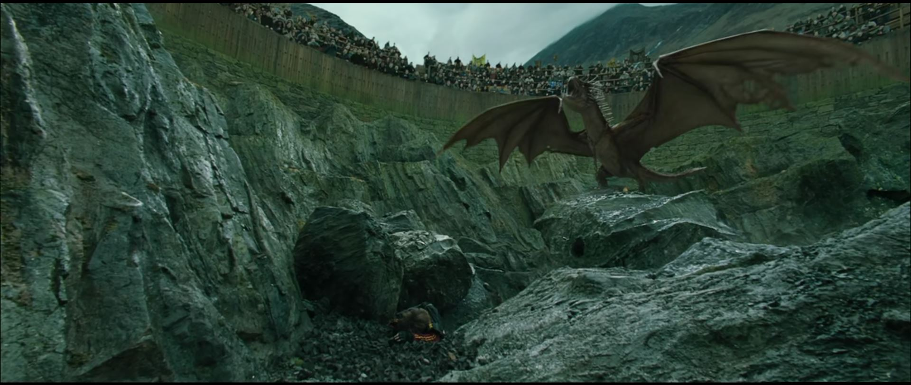
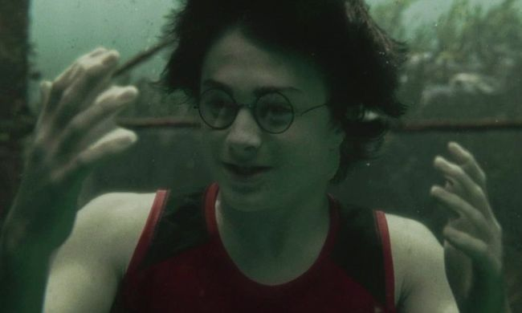
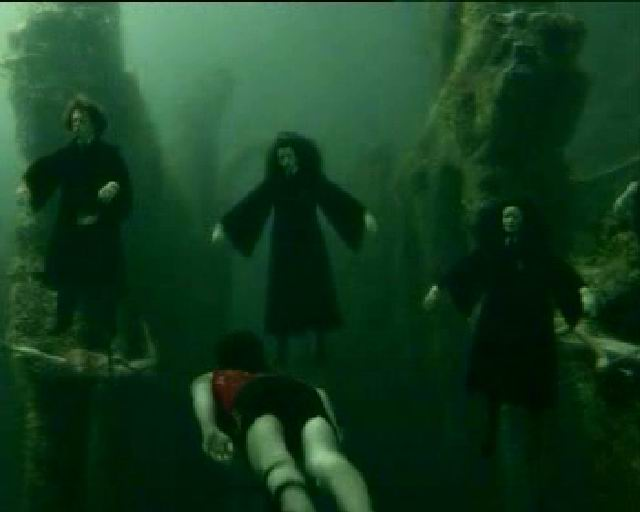
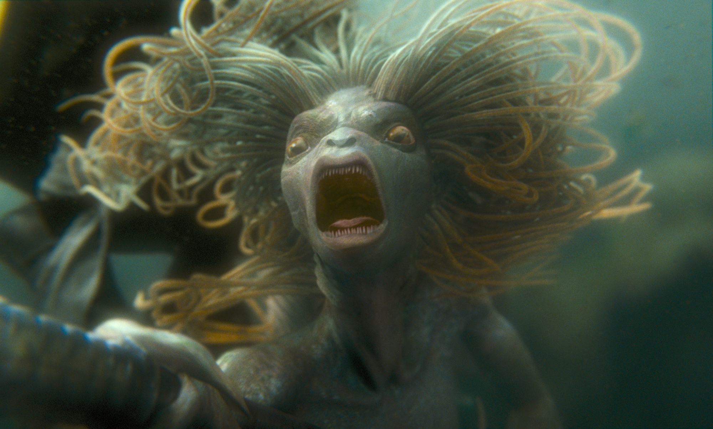
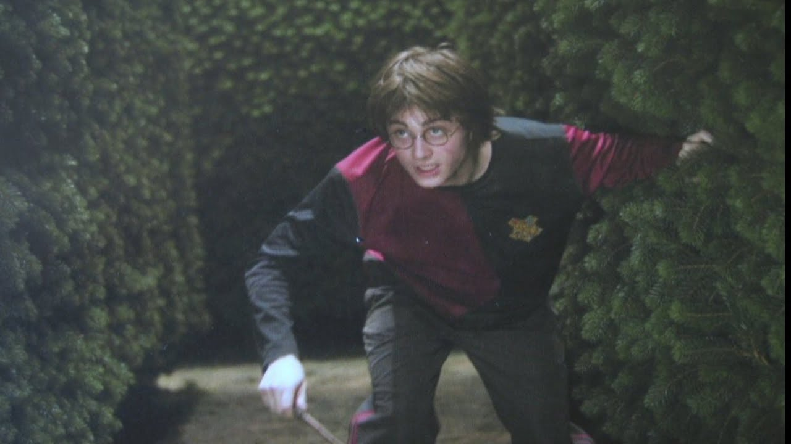
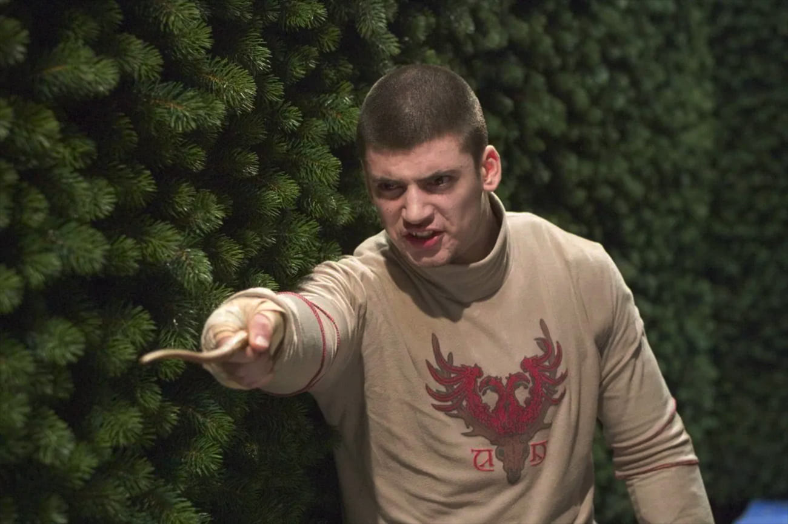
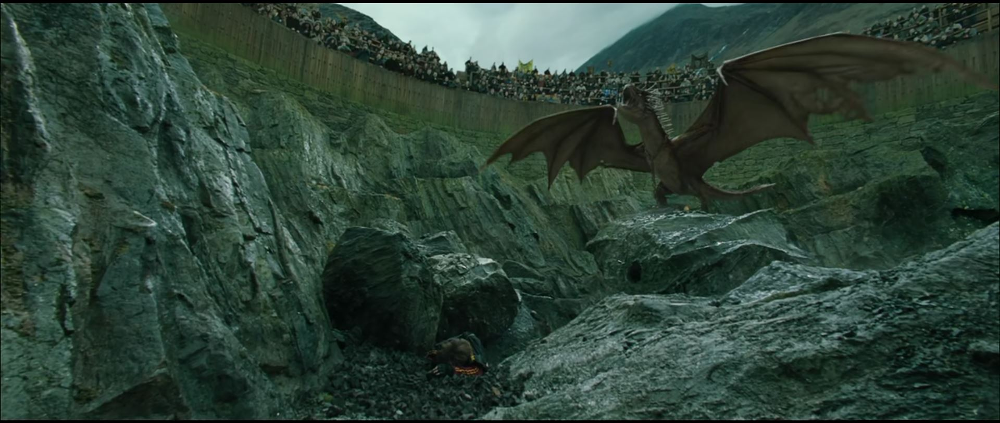
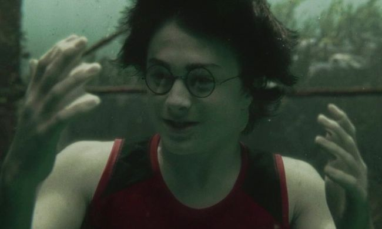
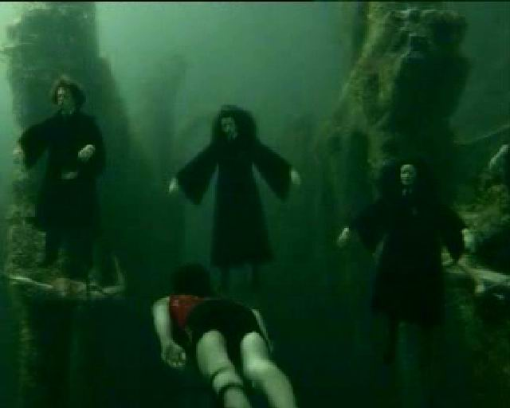
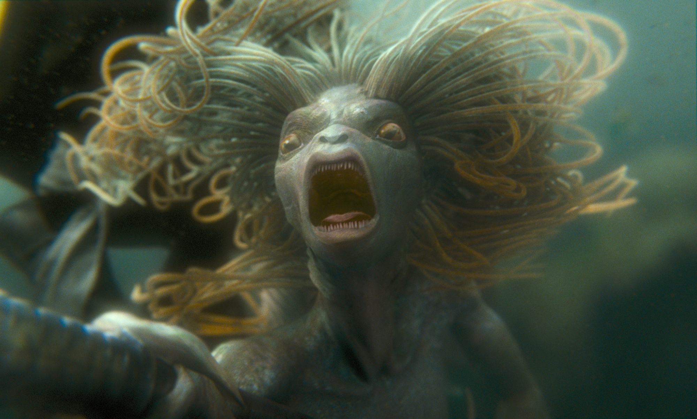
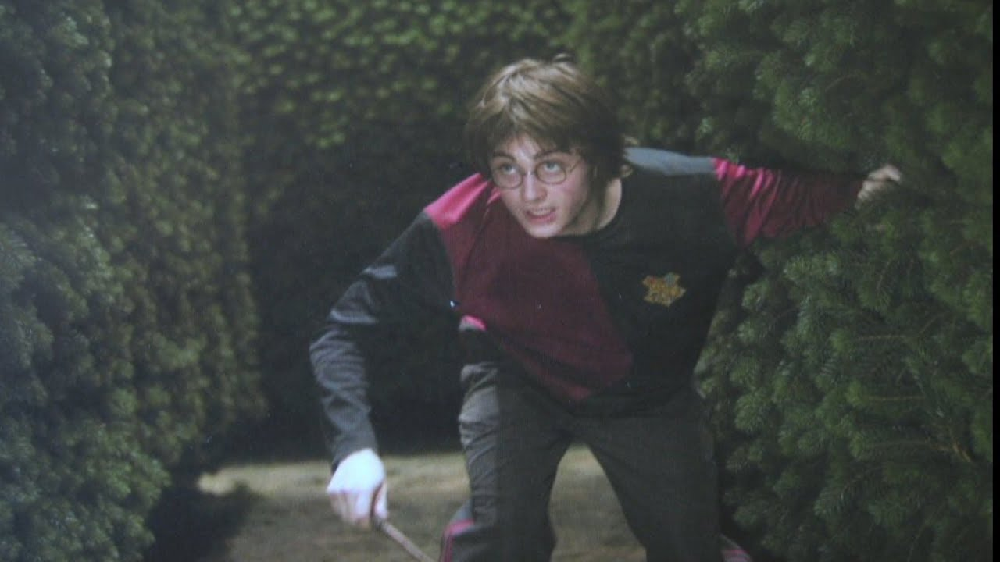
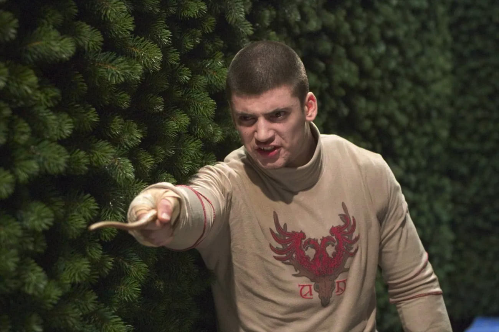